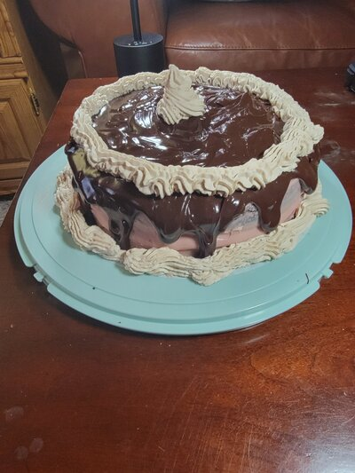
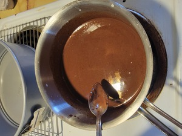
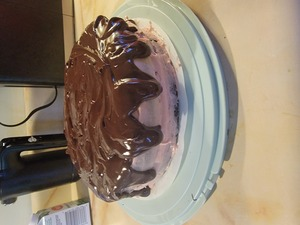
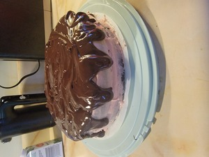

Chocolate Raspberry Cake
This moist and delicious chocolate cake uses dutch process cocoa and coffee to bring out a strong and rich chocolate flavor. The cake itself is very fluffy due to using oil in place of butter and results in a very runny batter which, in turn, creates a fluffy cake. Then it is finished with a flavorful raspberry buttercream frosting and a dark ganache drip over the top. This is a favorite of everyone I know who has tried it!
1. Preheat over to 350 degrees fahrenheit. Gather two 9 inch springform pans, mixing bowls, and a mixer.
2. Gather below ingedients on your counter to prepare to begin.
Ingredients
2 cups sugar
1 ¾ cups all-purpose flour
¾ cup unsweetened cocoa powder
2 tablespoons Dutch process cocoa
2 teaspoons baking soda
1 teaspoon baking powder
1 teaspoon kosher salt
2 eggs
1 cup buttermilk
1 cup strong black coffee
½ cup vegetable oil
2 teaspoons pure vanilla extract
Frosting Ingredients
1/2 cup butter
3 cups powdered sugar
1 tbsp milk
1/2 tsp vanilla
5 tbsp raspberry jam
Ganache Ingredients
12 ounces heavy cream
12 ounces dark chocolate chips

3. Combine the sugar, flour, cocoa(s), baking soda, baking powder and salt until dry ingedients thoroughly mixed. 4. Add oil, buttermilk, coffee, eggs and vanilla. Mix for about two minutes. This will result in a thin batter. 5. Pour batter evenly between your 2 pans, and bake in over for about 35 minutes. While this is in ove, work on frosting and ganache.
6. To prepare ganache, heat heavy cream in sauce pan over medium high heat, stirring occasionally. When cream starts to bubble, remove from heat and stir in chocolate chips until smooth. You can use an immersion blender to complete this if needed. Place in refridgerator to allow to begin cooling and thickening.
7. To create buttercream frosting, cream room temperature butter until smooth, then mix in 1 cup of sugar. Mix in milk, then 1 more cup of sugar. Then add in valinna and the final cup of sugar. Finally, add in raspberry jam and mix until smooth.
 

Assemble cake by leveling first layer of cake, topping with frosting, then placing second layer on top. Cover the whole cake with more raspberry frosting. Then, after ganache has cooled to about room temperature, drizzle on top and allow it to drip down the sides. FInally, decorate with whipped cream or any other decorations you may like. And last but not least, enjoy!